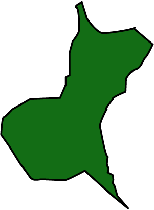

Ibaraki Prefecture is located in the Kanto region of Honshu. Located along the coastline, Ibaraki is a highly-populated region. Home to beautiful landscapes that consist of coastlines, iconic mountains, and lakes. 15% of the total land area is designated as Natural Parks some of which include Mount Tsukuba and Lake Kasumigaura. Ibaraki Prefecture is highly agricultural and industrial producing 25% of Japan’s bell peppers and chinese cabbage. It is also famous for numerous ancient ruins, art, pottery, Kairaku-en, one of the Three Great Gardens of Japan, and the martial art of Aikido.
Prefecture Image
